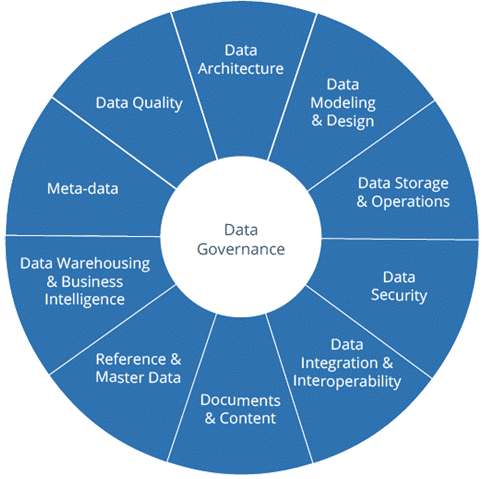

Cloud Management
Refering to the tasks and processes required to maintain your business applications and the resources that support them.
Data Management
What data management is and why it's important? : "data management is the development, execution, and supervision of plans, policies, programs, and practices that deliver, control, protect, and enhance the value of data and information assets throughout their life cycles." It is crucial to embed these disciplines deeply into your organization.
DAMA The Global Management Data Community

Database Design
Data has become a major asset to any organization. Corporate users from all levels, including operational management, middle management, and senior management, are requesting information to be able to make rational decisions and add value to the business
But should we design a SQL or a NoSQL Database?What are the critical differences and when we should use them?
See DocumentationData Warehouse Design
In progress TBD